Moussaka
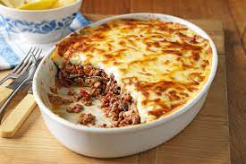
Ingredients
- 3 eggplants, peeled and cut lengthwise into 1/2 inch thick slices
- salt to taste
- ¼ cup olive oil
- 1 tablespoon butter
- 1 pound lean ground beef
- 2 onions, chopped
- 1 clove garlic, minced
- ground black pepper to taste
- 2 tablespoons dried parsley
- ½ teaspoon fines herbs
- ¼ teaspoon ground cinnamon
- ½ teaspoon ground nutmeg, divided
- 1 (8 ounce) can tomato sauce
- ½ cup red wine
- 1 egg, beaten
- 4 cups milk
- ½ cup butter
- 6 tablespoons all-purpose flour
- ground white pepper, to taste
- 1 ½ cups freshly grated Parmesan cheese
Steps
- Lay eggplant slices on paper towels; sprinkle lightly with salt. Let sit for 30
minutes to draw out moisture, then pat dry with paper towels.
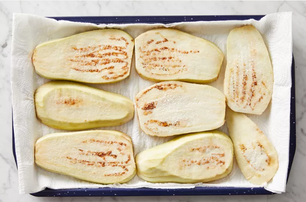
-
Warm olive oil in a skillet over high heat. Fry eggplant until browned, 2 to 3
minutes per side. Drain on paper towels; set aside.
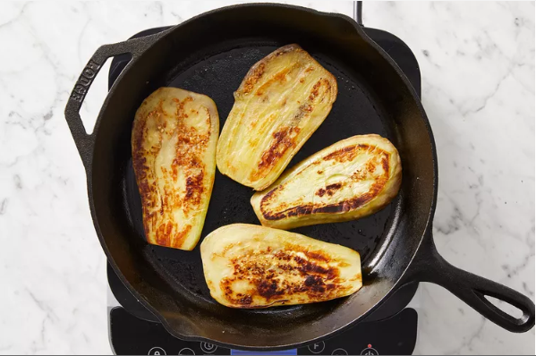
-
Melt 1 tablespoon butter in a large skillet over medium heat. Stir in ground beef,
onions, and garlic; season with salt and black pepper. Cook and stir until beef is
browned, 8 to 10 minutes.
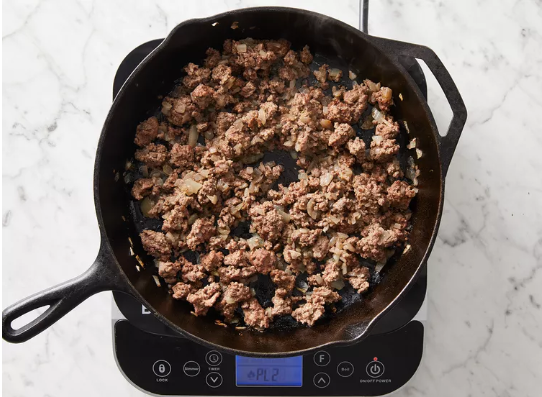
-
Add parsley, fines herbs, cinnamon, and 1/4 teaspoon nutmeg. Pour in tomato
sauce and wine; mix well. Simmer for 20 minutes. Allow to cool, then stir in
beaten egg.
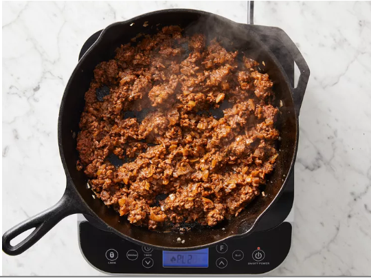
-
Scald milk in a saucepan over medium heat.
-
At the same time, melt 1/2 cup butter in a large skillet over medium heat.
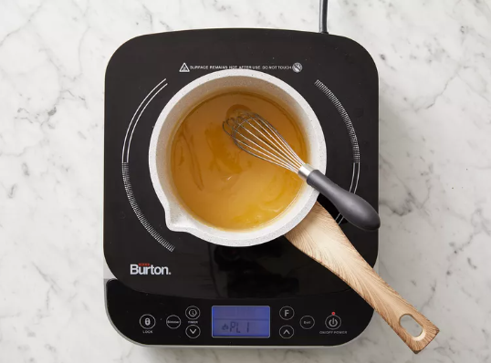
-
Whisk flour into butter until smooth. Lower heat; gradually pour in scalded milk,
whisking constantly until it thickens. Season béchamel sauce with salt and
white pepper.
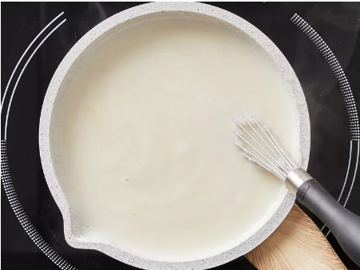
-
Preheat the oven to 350 degrees F (175 degrees C). Grease a 9x13-inch baking dish.
-
Arrange a single layer of eggplant in the prepared baking dish.
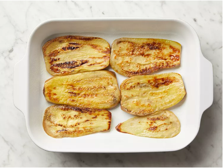
-
Cover eggplant with meat sauce, then sprinkle 1/2 cup Parmesan cheese on top.
Cover with remaining eggplant and sprinkle another 1/2 cup cheese on top.
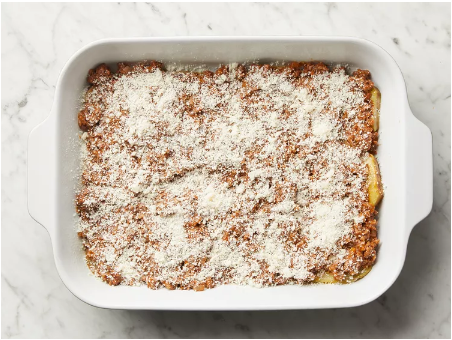
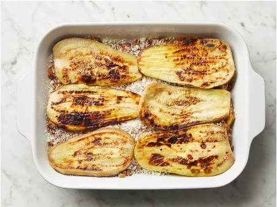
-
Pour béchamel sauce on top and sprinkle with remaining 1/4 teaspoon nutmeg.
Cover with remaining cheese.
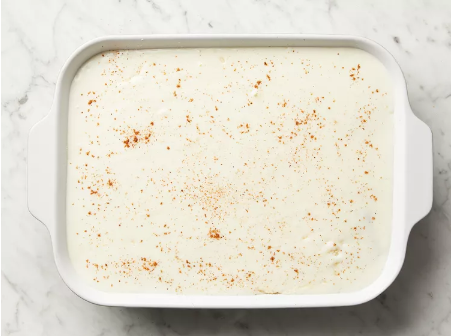
-
Bake in the preheated oven until bubbly and browned, about 1 hour.

-
Serve hot and enjoy!
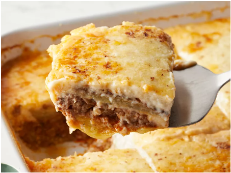